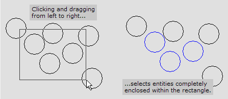
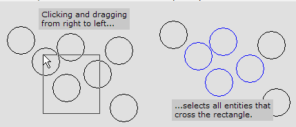
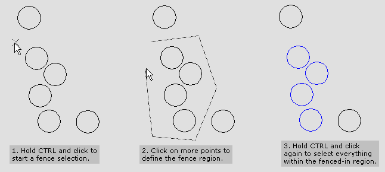
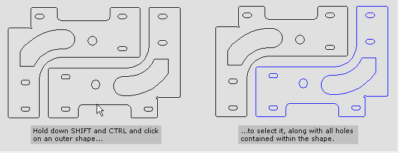
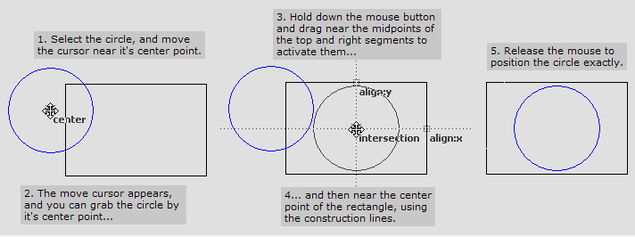
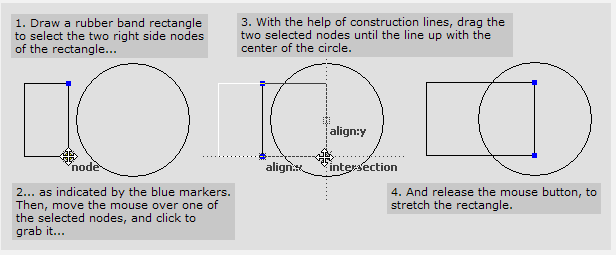
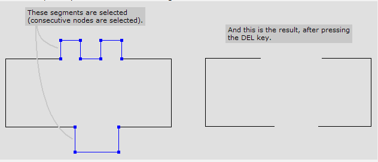

Picking mechanisms
Pick
Pick
Many commands work with selected entities. The Pick tool is used to select entities in preparation for these operations. It can also be used to move or copy entities using the mouse.
Selecting an entity
Click on the entity with the Pick tool. The entity changes colour to indicate that it has been selected. If there were other entities previously selected, they are deselected.
Selecting more than one entity
If you hold down the Shift key when clicking on an entity, the previously selected entities are not deselected. This way, you can select multiple entities.
Selecting a segment
Click on the segment holding Alt key with the Pick tool. The segment changes colour to indicate that it has been selected. If there were other segments previously selected, they are not deselected. You can click on the selected segment to deselect it.
Using a selection rectangle
Click on an empty area of the drawing, (not on any entity), hold down the mouse button and start dragging. Drag the rectangle to enclose all the entities that you want selected, and release the mouse button to select all these entities. (You can hold down the Shift key when you do this, to to avoid previously selected entities from being deselected).

Using a crossing window
When you click and drag a selection window from right to left, selects all entities that cross the selection window. Entities are selected even if only a part of the entity lies within the selection window (of course, entities that are completely within the selection window are selected too).

Using a Fence selection
You can select entities by drawing a fence around them. To do this, click on an empty area of the drawing while holding down the Ctrl key. This point becomes the start point of the fence. Keep clicking on additional points to define the fence area. Finally, when you are done, hold down the Ctrl key and click again to select the entities that lie completely within the fenced-in area.

Select with holes
If you hold down the Shift and Ctrl keys while clicking on a closed polyline, all polylines that are completely contained within that polyline are selected as well. See the picture below for an example.

Moving and copying using the Pick tool
When you point close to a selected entity, the cursor shape changes to a move cursor. Now you can click, drag and release to move the selected entities. If you hold down the Ctrl key when doing this, the entities don’t get moved, but get copied at the new position. All geometric snaps are available when moving or copying objects. Here’s an example with a rectangle and a circle, that shows how to move the circle so that its centre point corresponds to the centre point of the rectangle.

Partial selections
You can select only some of the nodes of a polyline by drawing a selection rectangle around only those nodes. (The rectangle must be drawn from left to right). Then, these selected nodes alone can be moved, changing the shape of the polyline. Here’s an example, in which the rectangle should be stretched horizontally, until its right edge passes through the centre of the circle.

Moving and stretching by specified distances in Pick mode.
When you are in pick mode, and you have some entities selected, or partially selected, the input bar at the bottom displays two boxes: DX and DY. You can type in and X and Y offset amount into these boxes, and press Enter to move or stretch the selected entities. If you hold down the Ctrl key when pressing Enter, a copy is made, and the copy is moved or stretched.
Deleting entities or parts of entities in Pick mode
If you choose Delete from the Edit menu, or click the DEL key, selected entities are deleted from the drawing. If some entities are partially selected, the selected segments are deleted.
